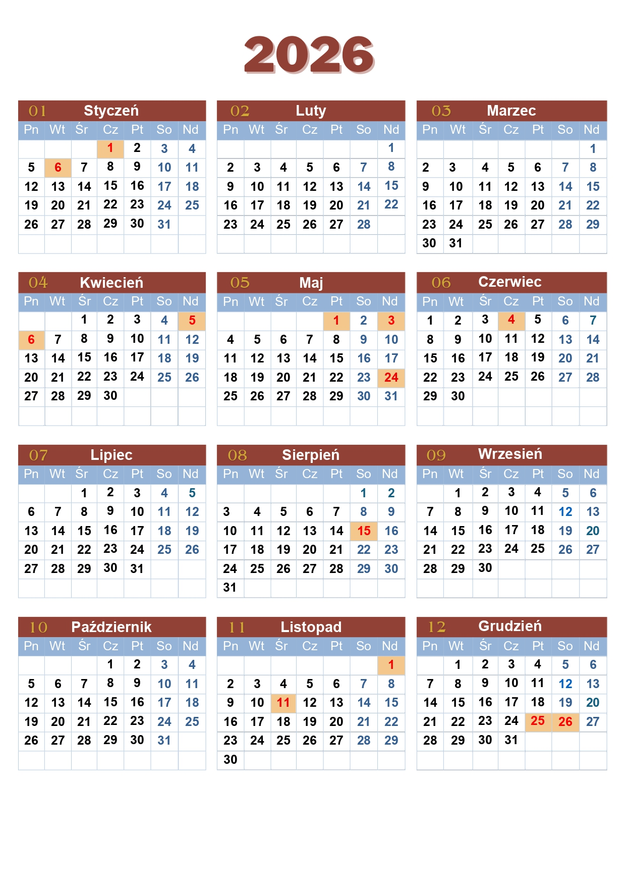

Праздничные дни в Польше на 2026 год, календарь выходных.
В Польше выходными днями считаются воскресенья, а также государственные и национальные праздники. В большинстве случаев, в эти дни действует запрет на торговлю и магазины не работают.
Предлагаем вашему вниманию перечень официальных праздников и нерабочих дней в Польше на 2026 год. Он поможет вам спланировать шопинг и путешествия.
Календарь праздников в Польше на 2026 год
- 1 января — Новый год (Nowy Rok)
- 6 января — Богоявление, Праздник Трех Королей
- 5 апреля — Пасха (Wielkanoc)
- 6 апреля — Пасхальный понедельник
- 1 мая — День труда
- 3 мая — День конституции
- 24 мая — Пятидесятница
- 4 июня — Boże Ciało
- 15 августа — Вознесение Девы Марии
- 1 ноября — День Всех Святых
- 11 ноября — День Независимости
- 25 декабря — Рождество
- 26 декабря — Второй день Рождества
Даты торговых воскресений в 2026 году
- 25 января
- 29 марта
- 26 апреля
- 28 июня
- 30 августа
- 6 декабря, 13 декабря, 20 декабря
*24 декабря Сочельник — официальный выходной, при этом три воскресенья накануне Сочельника — торговые дни.
